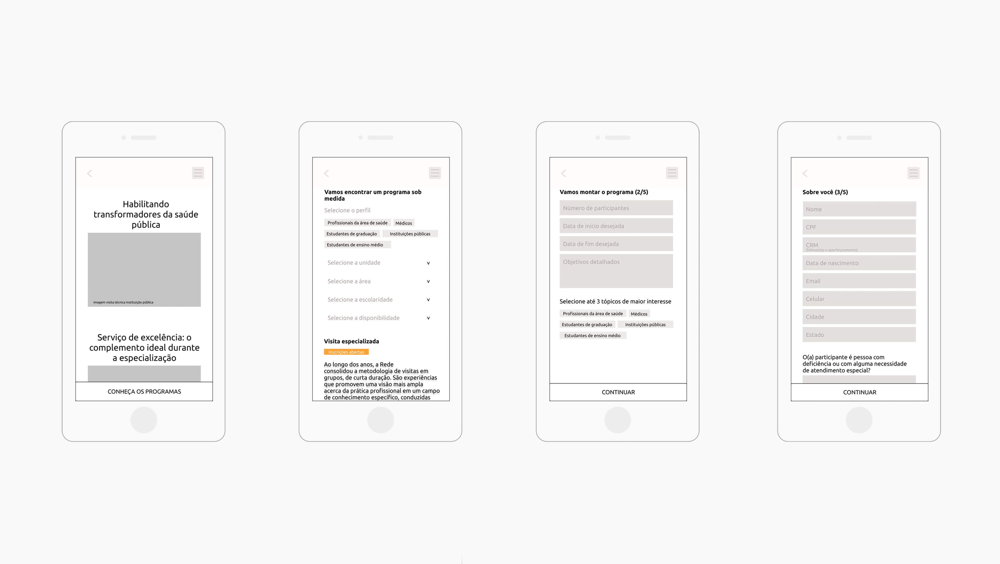
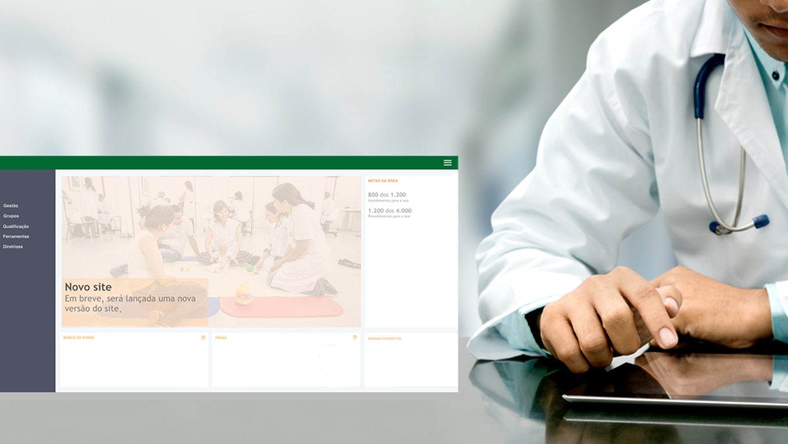
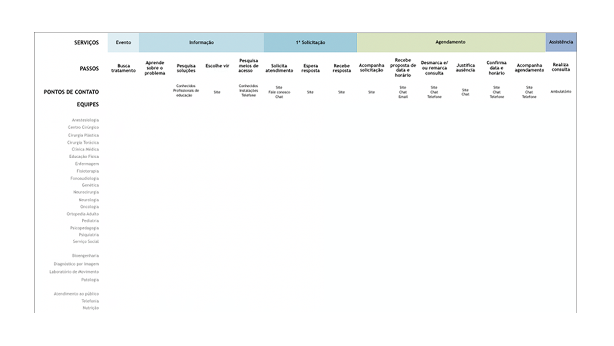

CONCEPTION
Keeping up with patients for improved rehabilitation
This project was conceived during an in-company UX/UI course. It was designed as a service to follow patients after hospitalization remotely during rehabilitation, while keeping the world class assistance.
Role: Product Designer
Duration: 1 month, 2019
Tools: Figma, personas, user journey maps, content taxonomy
The patients journeys were mapped and we found an opportunity for the service to improve its participation during the moment between the discharge from the hospital and the return appointment. A business model for a product designed to follow them remotely was presented. A service was designed for patients as a mobile app, from paper sketches to medium fidelity prototype. Some features would also be integrated with the eletronic medical record.

CONCEPTION
Users driven content and interactions
In this project, we were challenged to produce an updated version of the institutional website and my main contributions relate to information architecture.
Role: Product Designer
Duration: 8 months, 2018 - 2019
Tools: Figma, CMS, content taxonomy
A clearer and more concise version of the content was prepared, using a CMS (Content Management System). Some user testes were done and a protocol for future tests was generated. Later, we identified the need to restructure the value proposition and services offered to those interested in selection processes and educational programs. A content taxonomy was performed and, after maturing the initial text, a wireframe was produced. Forms would be presented as smooth conversations, in which small user decisions would guide content and interactions.
CONCEPTION
Bringing business and staff on the same page
The employee portal needed a vision for the future, stepping beyond its focus on contractual relationship with employees. Guiding principles and improvements in content architecture were suggested.
Role: Product Designer
Duration: 3 months, 2019
Tools: MS Power Point, focus group, personas, content taxonomy
To guide change, the channel would be understood as a mediating tool for the relationship between the brand and employees. Some principles would also be considered: collaboration, self-management, and service design. A prototype was generated, considering the moment of the relationship and seeking to reuse the tech stack, giving the tones of productivity, professional qualification and internal communication. In a focus group, we created personas, an initial taxonomy of existing services and a streamlined menu. The material became a start for later development.
CONCEPTION
Reframing patients experience
This project aimed to build a model of a team performance assessment based on patient feedbacks. The challenge was to identify appropriate metrics to assess the quality of patient experience, beyond Net Promoter Score.
Role: UX Consultant
Duration: 7 months, 2018 - 2019
Tools: personas, service blueprint
The concepts of proto-personas, patient journey and service blueprint were introduced and I advocated for the importance of obtaining qualitative data. The team gradually broadened the vision on User Experience and its metrics.
CONCEPTION + DEVELOPMENT
Spreading excellence in public health
As the hospital is a world reference in rehabilitation, the interest in visits increased exponentially over years. Thus, the ability to manage visit requests required a better solution.
Role: Product Designer
Duration: 9 months, 2015
Tools: MS Excel
Data concerning visitation requests were analyzed and the process was mapped. Before jumping into code, we managed all requests using a spreadsheet to mature the process. Based on lessons learned, we prototyped a visitor's centered dinamic form that would display different input fields and offer different programs depending on the data entered.

CONCEPTION + DEVELOPMENT
Empowering TV broadcasters to join the conversation
The startup aimed to offer analytical intelligence for TV broadcasters to participate in talks about their shows on Twitter. My mission was to help the team discover and deliver the best ways to monitor and analyze the conversations.
Role: Product Designer
Duration: 11 months, 2013 - 2014
Tools: Photoshop, MS Excel, interviews, Lean Startup, Scrum, Kanban
Through user interviews and customer relationship, we improved the product interface and terms used to monitor conversations. We also found that broadcasters needed much more than real-time data. From then on, in addition to the tool, we focused on providing more meaningfull strategic analysis and insights through weekly reports and support for successful data usage.